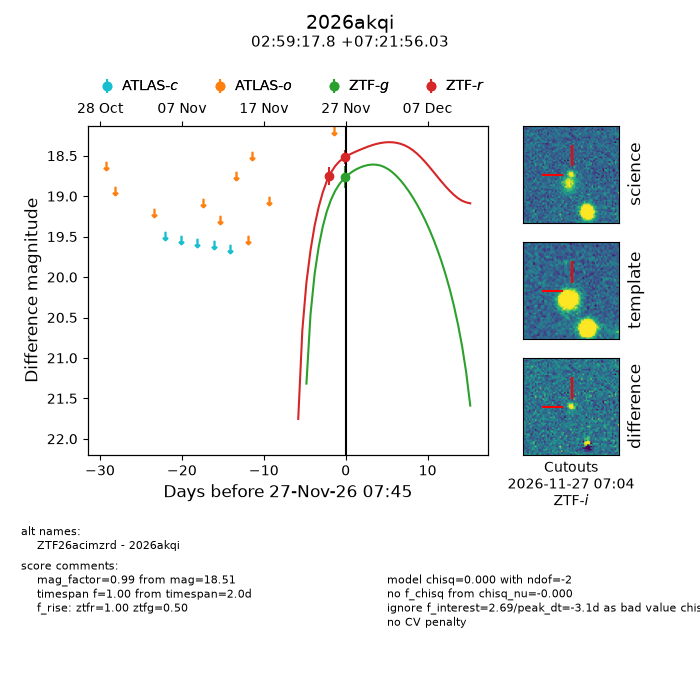
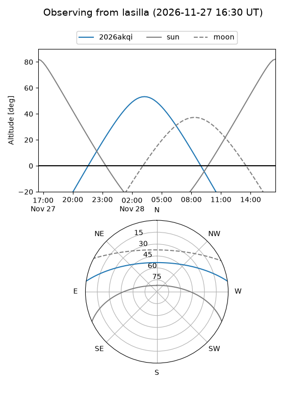
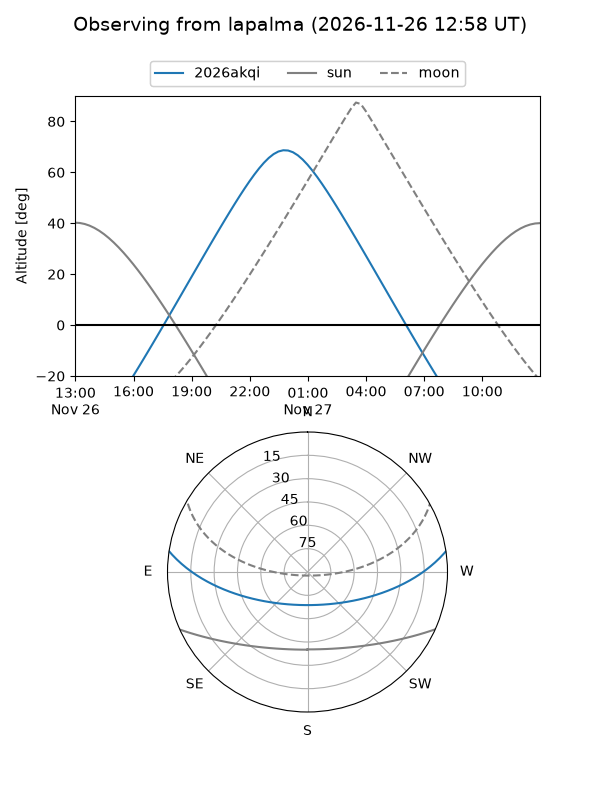
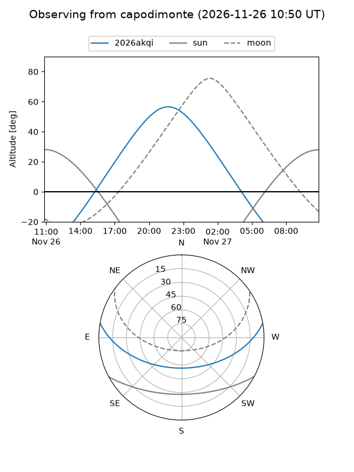
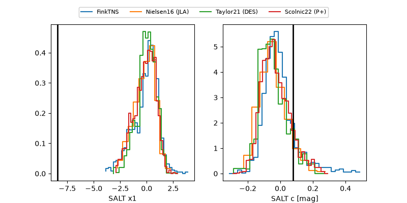

2026akqi
Target 2026akqi at 2026-11-27 07:46
Aliases and brokers:
FINK-ZTF: ztf.fink-portal.org/ZTF26acimzrd
Lasair-ZTF: lasair-ztf.lsst.ac.uk/objects/ZTF26acimzrd
ALeRCE-ZTF: alerce.online/object/ZTF26acimzrd
YSE-PZ: ziggy.ucolick.org/yse/transient_detail/2026akqi
TNS name: wis-tns.org/object/2026akqi
Direct TNS query: direct search
alt names
ZTF26acimzrd (ztf,fink_ztf)
2026akqi (tns,yse)
Coordinates:
equatorial (ra, dec) = 44.8241,+7.36557
equatorial (HMS+DMS) = 02:59:17.79,+07:21:56.03
galactic (l, b) = (169.4597,-43.65831)
Flags:
peak dt: -3.1
Photometry:
last ztfg=18.77, ztfr=18.51
1 ztfg, 2 ztfr detections
Lightcurve

Visibility



Additional plots
